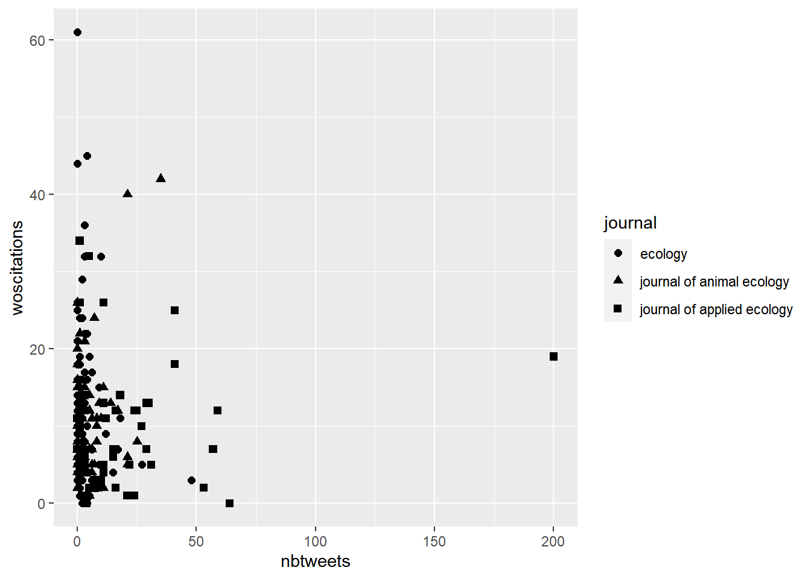
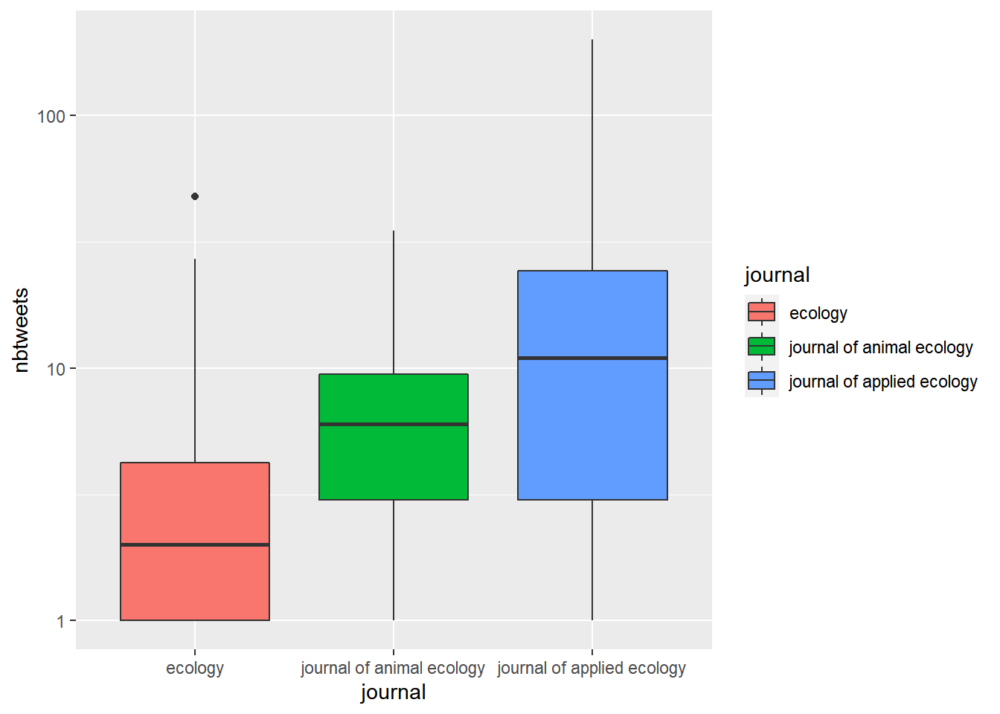
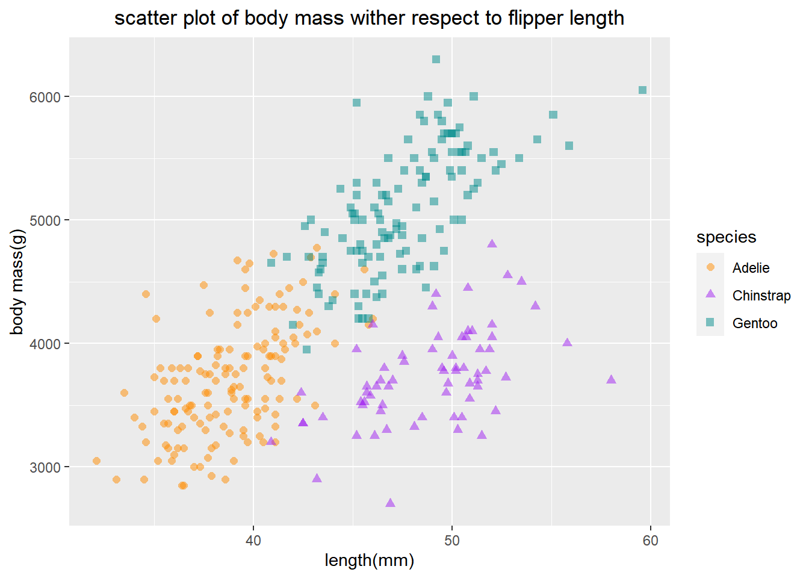

Tidyverse
在这之前要保持数据整洁性，也就是说列必须是变量名，行必须是测量的数据值（含计算公式的不算）
#需要用到的包
install.packages(c("tidyverse", "sf", "emo", "janitor", "palmerpenguins", "usethis", "lubridate"))
下载数据
#给出下载数据的地址
url<-"https://doi.org/10.1371/journal.pone.0166570.s001"
#给下载下来的文件重命名为twitter_cit_data.csv，并且把该文件放入文件夹data下，需要指定是因为当前工作路径是data的上一级文件夹。以及读取该数据并且把里面的数据放入数据集destfile
destfile <- "data/twitter_cit_data.csv"
download.file(url, destfile)
library(tidyverse)
#读取文件(注意搜寻到工作路径文件夹的下一级文件夹)并且把放入数据集citations_raw
citations_raw<-read_csv(file="data/twitter_cit_data.csv")
Warning: The above code chunk cached its results, but it won’t be re-run if previous chunks it depends on are updated. If you need to use caching, it is highly recommended to also set knitr::opts_chunk$set(autodep = TRUE) at the top of the file (in a chunk that is not cached). Alternatively, you can customize the option dependson for each individual chunk that is cached. Using either autodep or dependson will remove this warning. See the knitr cache options for more details.
对列名进行更改
#使得列名字更简洁，使用对旧名字重新命名的方式（步骤A）
library(tidyverse)
citations_temp <- rename(citations_raw,
journal = 'Journal identity',
impactfactor = '5-year journal impact factor',
pubyear = 'Year published',
colldate = 'Collection date',
pubdate = 'Publication date',
nbtweets = 'Number of tweets',
woscitations = 'Number of Web of Science citations')
head(citations_temp,5,6)
#快速使得列名字里的空格消失，并且用_来代替，大写字母改为小写，列名以数字开头的加上x？？
janitor::clean_names(citations_raw)
#更改列名的属性（步骤B）
##注意在步骤A的citations_temp中，journal这个变量的属性是chr，但一般数据分析的时候需要把它设置为factor，可以进行以下操作
citations <- mutate(citations_temp, journal = as.factor(journal))
citations
##把journal更改成factor就可以用levels函数来查看它有几个种类了
levels(citations$journal)
[1] "Animal Conservation" "Conservation Letters"
[3] "Diversity and Distributions" "Ecological Applications"
[5] "Ecology" "Ecology Letters"
[7] "Evolution" "Evolutionary Applications"
[9] "Fish and Fisheries" "Functional Ecology"
[11] "Global Change Biology" "Global Ecology and Biogeography"
[13] "Journal of Animal Ecology" "Journal of Applied Ecology"
[15] "Journal of Biogeography" "Limnology and Oceanography"
[17] "Mammal Review" "Methods in Ecology and Evolution"
[19] "Molecular Ecology Resources" "New Phytologist"
对数据进行操作的快速方式
- 使用pipe的方式使得电脑运行得更快，因为按以前得步骤，对数据操作得时候每一个步骤需要赋予一个新的变量名字A和B和C，用<-连接，这相当于每次都在存储数据集，但使用pipe就只需要一次赋予变量名C，就相当于完成前面得几个步骤（不需要赋予中间变量名字了），以下是把上面步骤A和B结合起来直接得到C得例子，使用pipe的方法的符号是%>%，它的意思就是then
#第一种完成各个操纵列名步骤后赋予最终变量citations的方式：
citations <- citations_raw %>%
rename(journal = 'Journal identity',
impactfactor = '5-year journal impact factor',
pubyear = 'Year published',
colldate = 'Collection date',
pubdate = 'Publication date',
nbtweets = 'Number of tweets',
woscitations = 'Number of Web of Science citations') %>%
mutate(journal = as.factor(journal))
head(citations)
#第二种完成各个操纵列名步骤后赋予最终变量citations的方式：
citations_raw %>%
rename(journal = 'Journal identity',
impactfactor = '5-year journal impact factor',
pubyear = 'Year published',
colldate = 'Collection date',
pubdate = 'Publication date',
nbtweets = 'Number of tweets',
woscitations = 'Number of Web of Science citations') %>%
mutate(journal = as.factor(journal))-> citations2
head(citations2)
对具体行数据更改
#把Authors这列数据中的每个名字中的大写字母都改成小写字母
citations %>%
mutate(authors_lowercase = str_to_lower(Authors)) %>%
select(authors_lowercase)
#把Journal这列数据中的每个期刊的名字的空格都删除，注意与上面的select后的代码对比，此处还加了个unique函数，是指仅仅展示出期刊的种类名字，例如此处有20个，如果没有这个函数，那么将如上面一样展出1599个数据
citations%>%
mutate(journal = str_remove_all(journal," ")) %>%
select(journal) %>%
unique()
选择性的展示数据：
#选择三个变量展示（三列数据）
citations %>%
select(journal, impactfactor, nbtweets)
#选择三个变量不展示（删除掉这三列数据）
citations %>%
select(-Volume, -Issue, -Authors)
#根据Authors这个变量，筛选出所有作者大于三个的数据，注意原本数据有1599行，根据这个条件筛选后只有1280行
citations %>%
filter(str_detect(Authors,'et al')) %>%
select(Authors)
#根据Authors这个变量，筛选出所有作者小于三个的数据（注意与前面大于三个的代码做对比，此处用！代表非），注意原本数据有1599行，根据这个条件筛选后只有319行，select函数等于pull函数，但是前者只列出10个，后者则是319个数据全列出
citations %>%
filter(!str_detect(Authors,'et al')) %>%
select(Authors)
#筛选出authors大于三个且IF小于5的数据。注意原本数据有1599行，根据这个条件筛选后只有77行
citations %>%
filter(!str_detect(Authors,'et al'), impactfactor < 5)
#选择journal这个变量其中三种期刊对应的数据
citations_ecology <- citations %>%
mutate(journal = str_to_lower(journal)) %>%
filter(journal %in%
c('journal of animal ecology','journal of applied ecology','ecology'))
head(citations_ecology)
对于时间变量数据的展示
#查看原本时间数据这一列是月/天/年的格式
head(citations$pubdate)
[1] "9/16/2014" "10/13/2014" "10/21/2014" "8/28/2014" "8/28/2014"
[6] "7/28/2014"
##使用separate函数把时间这一列数据拆分成年月日三列数据形式
citations %>%
select(journal, impactfactor, nbtweets, pubdate)%>%
separate(pubdate,c('month','day','year'),'/')
##R里面有个lubridate包是专门用来处理时间数据可读性的问题，比如把月/天/年的格式或者中文的数据全部一起转化成year-month-day的格式，或者单单展示某一列时间数据的年份：
library(lubridate)
citations %>%
mutate(pubdate = mdy(pubdate),
pubyear2 = year(pubdate),
colldate = mdy(colldate))%>%
select(journal,impactfactor, nbtweets, pubdate, pubyear2, colldate)
根据不同分组来计算
#计算Journal下每个分类水平出现了多少次，并且根据这个n次数进行排序（sort=true）
citations %>%
count(journal, sort = TRUE)
#计算Journal和pubyear下每个一一对应水平一起出现的次数
citations %>%
count(journal, pubyear)
#按Journal下的分类水平来分组，计算每一类期刊的nbtweets的总和
citations %>%
count(journal, wt = nbtweets, sort = TRUE)
##或者按以下方法也可以，同样的结果，但是结果的排序方式不一样。上面的代码是根据n大小排列，下面代码是先根据journal下分类水平名字首字母先排，再根据n（sum_tweets）大小排
citations %>%
group_by(journal) %>%
summarise(sum_tweets = sum(nbtweets))
#按Journal下的分类水平来分组，计算每一类期刊的nbtweets的平均，由于结果先根据journal下分类水平名字首字母先排，再根据n(avg_tweets)大小排，如果想要仅仅根据n(avg_tweets)来排序可以使用arrange函数
citations %>%
group_by(journal) %>%
summarise(avg_tweets = mean(nbtweets)) %>%
arrange(desc(avg_tweets))-> arrangedat
head(arrangedat, 10)
#按Journal下的分类水平来分组，计算其他变量数值的平均
citations %>%
group_by(journal) %>%
summarize(across(where(is.numeric), mean))
练习
library(palmerpenguins)
library(tidyverse)
#检查数据，一共有344个peguins
penguins
#该函数是查看数据结构，例如变量的均值、最大最小值等
summary(penguins)
species island bill_length_mm bill_depth_mm
Adelie :152 Biscoe :168 Min. :32.10 Min. :13.10
Chinstrap: 68 Dream :124 1st Qu.:39.23 1st Qu.:15.60
Gentoo :124 Torgersen: 52 Median :44.45 Median :17.30
Mean :43.92 Mean :17.15
3rd Qu.:48.50 3rd Qu.:18.70
Max. :59.60 Max. :21.50
NA's :2 NA's :2
flipper_length_mm body_mass_g sex year
Min. :172.0 Min. :2700 female:165 Min. :2007
1st Qu.:190.0 1st Qu.:3550 male :168 1st Qu.:2007
Median :197.0 Median :4050 NA's : 11 Median :2008
Mean :200.9 Mean :4202 Mean :2008
3rd Qu.:213.0 3rd Qu.:4750 3rd Qu.:2009
Max. :231.0 Max. :6300 Max. :2009
NA's :2 NA's :2
#该函数可以查看数据结构内细节，例如变量的属性（因子还是整数？）以及变量名下的每个数据
glimpse(penguins)
Rows: 344
Columns: 8
$ species <fct> Adelie, Adelie, Adelie, Adelie, Adelie, Adelie, Adel…
$ island <fct> Torgersen, Torgersen, Torgersen, Torgersen, Torgerse…
$ bill_length_mm <dbl> 39.1, 39.5, 40.3, NA, 36.7, 39.3, 38.9, 39.2, 34.1, …
$ bill_depth_mm <dbl> 18.7, 17.4, 18.0, NA, 19.3, 20.6, 17.8, 19.6, 18.1, …
$ flipper_length_mm <int> 181, 186, 195, NA, 193, 190, 181, 195, 193, 190, 186…
$ body_mass_g <int> 3750, 3800, 3250, NA, 3450, 3650, 3625, 4675, 3475, …
$ sex <fct> male, female, female, NA, female, male, female, male…
$ year <int> 2007, 2007, 2007, 2007, 2007, 2007, 2007, 2007, 2007…
#删掉变量sex中的na值并且把该数据放入新的数据集dat中
dat <- penguins %>%
filter(!is.na(sex)) %>%
select(species, island, bill_length_mm, body_mass_g)
head(dat)
glimpse(dat)
Rows: 333
Columns: 4
$ species <fct> Adelie, Adelie, Adelie, Adelie, Adelie, Adelie, Adelie,…
$ island <fct> Torgersen, Torgersen, Torgersen, Torgersen, Torgersen, …
$ bill_length_mm <dbl> 39.1, 39.5, 40.3, 36.7, 39.3, 38.9, 39.2, 41.1, 38.6, 3…
$ body_mass_g <int> 3750, 3800, 3250, 3450, 3650, 3625, 4675, 3200, 3800, 4…
#计算每种物种下作为样本的企鹅的数量，每种岛屿下作为样本的企鹅的数量，任意一种物种和岛屿下作为样本的企鹅的数量（是过滤掉na数据之后的数据，因此一共都是333只企鹅）
levels(dat$species)
[1] "Adelie" "Chinstrap" "Gentoo"
dat %>% count(species, sort=TRUE)
levels(dat$island)
[1] "Biscoe" "Dream" "Torgersen"
dat %>% count(island)
dat %>% count(species, island)
#计算所有企鹅的平均重量
library(lubridate)
dat1 <- dat %>%
mutate(avg_mass=mean(body_mass_g), se_mass=sd(body_mass_g)/sqrt(n()))
dat1
#计算每个物种下所有企鹅的平均体重
dat %>%
group_by(species) %>%
summarise(avg_mass = mean(body_mass_g)) %>%
arrange(desc(avg_mass))-> arrangedat
head(arrangedat, 10)
#计算每个物种下所有企鹅的平均体重和平均脚蹼长度
dat %>%
group_by(species) %>%
summarize(across(where(is.numeric), mean))
##或者这个方法
dat %>%
group_by(species) %>%
summarize(across(bill_length_mm:body_mass_g, mean))
##或者是如果是原始数据包含了许多NA指，则需要指定na.rm=TRUE
penguins %>%
group_by(species) %>%
summarize(across(where(is.numeric), mean, na.rm = TRUE))
ggplot2
引入数据
url <- "https://doi.org/10.1371/journal.pone.0166570.s001"
destfile <- "data/twitter_cit_data.csv"
download.file(url, destfile)
library(tidyverse)
citations_raw<-read_csv(file="data/twitter_cit_data.csv")
citations <- citations_raw %>%
rename(journal = 'Journal identity',
impactfactor = '5-year journal impact factor',
pubyear = 'Year published',
colldate = 'Collection date',
pubdate = 'Publication date',
nbtweets = 'Number of tweets',
woscitations = 'Number of Web of Science citations') %>%
mutate(journal = as.factor(journal))
citations_ecology <- citations %>%
mutate(journal = str_to_lower(journal)) %>% # all journals names lowercase
filter(journal %in%
c('journal of animal ecology','journal of applied ecology','ecology')) # filter
head(citations_ecology)
Warning: The above code chunk cached its results, but it won’t be re-run if previous chunks it depends on are updated. If you need to use caching, it is highly recommended to also set knitr::opts_chunk$set(autodep = TRUE) at the top of the file (in a chunk that is not cached). Alternatively, you can customize the option dependson for each individual chunk that is cached. Using either autodep or dependson will remove this warning. See the knitr cache options for more details.
点图
#基础的点图
scatterplot<-citations %>%
ggplot() +
aes(x = nbtweets, y =woscitations) +
#如果是geom_point()则是默认为黑色
geom_point(color = "red")
scatterplot
#点图按组分颜色
scatter_spcol2<-citations %>%
ggplot() +
aes(x = nbtweets, y = woscitations, color = journal) +
geom_point()
scatter_spcol2
#点图按组分图形
scatter_ecol<-citations_ecology %>%
ggplot() +
aes(x = nbtweets, y = woscitations, shape = journal) +
geom_point(size=2)
scatter_ecol

#给点图做线1
scatter_line<-citations_ecology %>%
ggplot() +
aes(x = nbtweets, y = woscitations) +
geom_line() + #此行代码就是画线
scale_x_log10() #此行代码是对x坐标进行log转换
scatter_line
#给点图做线2，并且加上数据点
scatter_line2<-citations_ecology %>%
arrange(woscitations) %>%
ggplot() +
aes(x = nbtweets, y = woscitations) +
geom_line() +
geom_point() +
scale_x_log10()
scatter_line2
#对数据点进行拟合，默认是多项式回归？可以强调用线性的方式拟合geom_smooth(method = "lm")
scatter_line5<-citations_ecology %>%
arrange(woscitations) %>%
ggplot() +
aes(x = nbtweets, y = woscitations) +
geom_point() +
geom_smooth() +
scale_x_log10()
scatter_line5
直方图
#直方图中用于映射作图的数据只有x的
#最基础的直方图，如果写geom_histogram()则默认是黑色,其中的参数fill指填充的颜色，color指的是柱形的边框颜色。labs()函数是指给横坐标纵坐标和标题添加名字
histo<-citations_ecology %>%
ggplot() +
aes(x = nbtweets) +
geom_histogram(fill="orange",color="black") +
labs(x = "Number of tweets",
y = "Count",
title = "Histogram of the number of tweets")
histo
#按组来或多个直方图
histo2<-citations_ecology %>%
ggplot() +
aes(x = nbtweets) +
geom_histogram(fill = "orange", color = "brown") +
labs(x = "Number of tweets",
y = "Count",
title = "Histogram of the number of tweets") +
facet_wrap(vars(journal))
histo2
箱线图
#箱线图中用于映射作图的只有y上的数据
#最基本的箱线图，如果是geom_boxplot()则默认没有填充颜色
boxpl<-citations_ecology %>%
ggplot() +
aes(x = "", y = nbtweets) +
geom_boxplot(fill="green") +
scale_y_log10()
boxpl
#按组来画箱线图
boxp2 <- citations_ecology %>%
ggplot() +
aes(x = journal, y = nbtweets, fill = journal) +
geom_boxplot() +
scale_y_log10()
boxp2

#如果上面要使得横坐标的标签消失掉
boxp3 <- citations_ecology %>%
ggplot() +
aes(x = journal, y = nbtweets, fill = journal) +
geom_boxplot() +
scale_y_log10() +
theme(axis.text.x = element_blank()) +
labs(x = "")
boxp3
#如果上面要自己定义箱型图的颜色以及自己定义右边图注的名称
boxp4 <- citations_ecology %>%
ggplot() +
aes(x = journal, y = nbtweets, fill = journal) +
geom_boxplot() +
scale_y_log10() +
scale_fill_manual(
values = c("red", "blue", "purple"), name = "Journal name",
labels = c("Ecology", "J Animal Ecology", "J Applied Ecology")) +
theme(axis.text.x = element_blank()) +
labs(x = "")
boxp4
柱状图
#不好的柱形图
citations %>%
count(journal) %>%
ggplot() +
aes(x = journal, y = n) +
geom_col()
#上面的情况调换横纵坐标会更清晰
citations %>%
count(journal) %>%
ggplot() +
aes(x = n, y = journal) +
geom_col()
#上面的情况使得数据从大排到小，并且使得纵坐标的标题名字消失会更加好
citations %>%
count(journal) %>%
ggplot() +
aes(x = n, y = fct_reorder(journal, n)) +
geom_col() +
labs(x = "counts", y = "")
频率图
#最基础的，会发现部分被挡住了
citations_ecology %>%
ggplot() +
aes(x = nbtweets, fill = journal) +
geom_density() +
scale_x_log10()
#调整透明度会使得上面效果更好
citations_ecology %>%
ggplot() +
aes(x = nbtweets, fill = journal) +
geom_density(alpha = 0.5) +
scale_x_log10()
#改变上图的背景样式1，或者试试theme_bw()
citations_ecology %>%
ggplot() +
aes(x = nbtweets, fill = journal) +
geom_density(alpha = 0.5) +
scale_x_log10() +
theme_bw()
#改变背景样式2
citations_ecology %>%
ggplot() +
aes(x = nbtweets, fill = journal) +
geom_density(alpha = 0.5) +
scale_x_log10() +
theme_classic()
练习
#按企鹅的种类来绘制其体重与数量关系，发现部分直方图被挡住了
histo1 <- dat %>%
ggplot() +
aes(x = body_mass_g, fill=species) +
geom_histogram(alpha=0.5) +
scale_fill_manual(values = c(" darkorange"," purple","cyan4")) +
labs(x = "body mass(g)",
y = "Count", title = "Histogram of the body mass")+
theme_bw()
histo1
#通过调整fill=species填充的图层位置来调整透明度。
histo2 <-penguins %>%
ggplot() +
aes(x = body_mass_g) +
geom_histogram(aes(fill = species),
alpha = 0.5,
position = "identity") +
scale_fill_manual(values = c("darkorange","purple","cyan4")) +
theme_minimal() +
labs(x = "Body mass (g)",
y = "Frequency",
title = "Penguin body mass")
histo2
#相比于调整透明度，做密度分布图更清晰
histo_den<-dat %>%
ggplot() +
aes(x = body_mass_g, fill=species) +
geom_density(alpha=0.5) +
scale_fill_manual(values = c(" darkorange"," purple","cyan4")) +
labs(x = "body mass(g)",
y = "frequency", title = "Histogram of the body mass",fill= "penguins in species") +
theme(plot.title = element_text(hjust = 0.5)) +
theme_bw()
histo_den
#按企鹅性别分别作图，在facet_wrap()函数部分要强调 scales = "free_x"，才能根据本身数据调整x轴范围，否则会像下图histo4一般全部同一范围但是图片不好。
histo3<-penguins %>%
ggplot() +
aes(x = body_mass_g, fill=species) +
geom_histogram(alpha=0.5) +
scale_fill_manual(values = c(" darkorange"," purple","cyan4")) +
labs(x = "body mass(g)",
y = "Count", title = "Histogram of the body mass")+
theme_bw() +
facet_wrap(~sex, scales = "free_x")
histo3
histo4<-penguins %>%
ggplot() +
aes(x = body_mass_g, fill=species) +
geom_histogram(alpha=0.5) +
scale_fill_manual(values = c(" darkorange"," purple","cyan4")) +
labs(x = "body mass(g)",
y = "Count", title = "Histogram of the body mass")+
theme_bw() +
facet_wrap(~sex)
histo4
#根据企鹅物种做体重和脚蹼长度关系的点图，数据点类型和颜色都区分开来。
scatter_spcol <- dat %>%
ggplot() +
aes(x = bill_length_mm, y = body_mass_g, shape = species, color= species) +
geom_point(size=2, alpha=0.5) +
scale_color_manual(values = c("darkorange","purple", "cyan4")) +
labs(x = "length(mm)",
y = "body mass(g)", title = "scatter plot of body mass wither respect to flipper length") +
theme(plot.title = element_text(hjust = 0.5))
scatter_spcol

